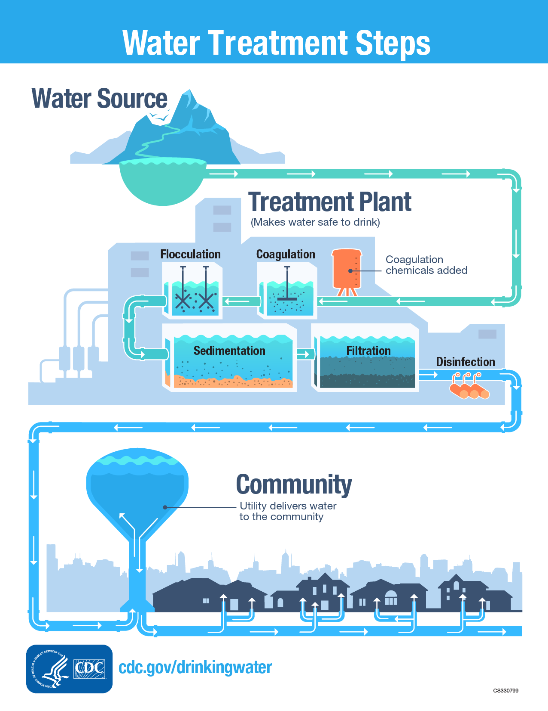

Water treatment involves several steps to ensure the delivery of clean and safe drinking water. Here are the main steps of the water treatment process:
This step involves determining the specific location or origin of the water to be purified. Various methods can be used to identify the water source, such as GPS coordinates, water sampling, or user input. For example, you can utilize geolocation APIs to retrieve the user's location and fetch corresponding water source data.
The identification of the water source is a crucial first step in the water treatment process. It involves locating and determining the origin of the water that will be treated. This may include conducting surveys, analyzing hydrological data, and assessing the sustainability and quality of potential water sources such as rivers, lakes, or underground aquifers. Understanding the characteristics and availability of the water source is essential for designing an appropriate treatment plan that can effectively address any specific challenges or contaminants associated with that particular source.
Sampling the water involves collecting a representative sample from the water source. This can be done by physically collecting water samples and sending them to a laboratory for analysis. The collected samples are typically analyzed to assess their quality and identify any contaminants present.
Once the water source is identified, the next step is to conduct sampling of the water. This involves collecting representative samples from the source to analyze and assess its quality. Samples are typically taken at different locations and depths to ensure a comprehensive understanding of the water's characteristics. These samples are then tested for various parameters such as pH levels, turbidity, dissolved solids, microbial contaminants, and the presence of specific pollutants or toxins. Sampling helps to establish a baseline for water quality and guides the selection of appropriate treatment processes.
The identification of pollutants involves analyzing the collected water samples to determine the presence and concentration of various contaminants. This step can be accomplished through laboratory testing or advanced water quality analysis methods. By identifying the specific pollutants, appropriate purification techniques can be selected to address them effectively.
After sampling, the collected water samples undergo laboratory analysis to identify the specific pollutants or contaminants present. This analysis involves a range of tests to detect the presence of harmful substances such as heavy metals, organic compounds, pesticides, bacteria, or viruses. By identifying the pollutants, treatment plant operators can tailor the treatment process to effectively remove or neutralize these specific contaminants. This step is crucial for ensuring that the chosen treatment methods can adequately address the identified pollutants and provide clean and safe drinking water.
Water purification involves the removal or reduction of contaminants present in the water. Various techniques can be employed for purification, including coagulation, sedimentation, filtration, and chemical treatments. The choice of purification method depends on the identified pollutants and the desired water quality standards.
Once the pollutants are identified, the water treatment process moves to the purification stage. Purification involves the removal or reduction of impurities, contaminants, and pollutants present in the water. Different treatment techniques may be employed, such as coagulation and flocculation, sedimentation, filtration, and chemical disinfection. These processes work together to separate solids, neutralize harmful substances, and improve the overall quality of the water. Purification aims to make the water safe for consumption and compliant with regulatory standards.
In this step, chemicals are added to the water to cause small particles to clump together into larger particles called floc. This helps to remove impurities and sediment from the water.
The water is then allowed to sit in large tanks, allowing the heavier floc particles to settle to the bottom. This process is called sedimentation. The clear water above the settled particles is then ready for the next treatment step.
Filtering the water aims to remove impurities and improve its clarity and taste. Different types of filters, such as activated carbon filters or reverse osmosis membranes, can be used for this purpose. The water is passed through these filters, which trap and remove particles, sediment, and other impurities.
The water passes through various filters, such as sand filters, activated carbon filters, or membrane filters. These filters remove smaller particles, bacteria, and other contaminants from the water.
As part of the treatment process, water is subjected to filtration to remove any remaining suspended particles, sediments, or debris. Filtration can be achieved using various materials such as sand, activated carbon, or specialized membranes. The filtering process helps to further clarify the water, improving its clarity and reducing turbidity. This step ensures that the water is aesthetically pleasing and enhances the overall quality of the treated water.
Disinfection is a crucial step to eliminate harmful microorganisms and ensure the water is safe for consumption. Common disinfection methods include chlorination, ultraviolet (UV) disinfection, or ozonation. These methods effectively kill or inactivate microorganisms, reducing the risk of waterborne diseases.
After filtration, the water undergoes disinfection to destroy any remaining bacteria, viruses, or other microorganisms that may be present. This step is crucial to ensure that the water is free from harmful pathogens that can cause waterborne diseases. Common disinfection methods include the use of chemicals such as chlorine, chloramine, or UV irradiation. Disinfection helps to safeguard public health by eliminating microbial contaminants and making the water safe for consumption.
To kill any remaining bacteria and microorganisms, disinfectants such as chlorine, chloramine, or ultraviolet (UV) light are added to the water. This step ensures the water is safe for consumption.
The pH level of the water may be adjusted using chemicals to achieve the desired pH range. This helps to control corrosion and minimize scale formation in the distribution system.
In some cases, fluoride may be added to the water to prevent tooth decay and promote dental health. The addition of fluoride is carefully regulated to ensure safe levels.
After purification and disinfection, the water is stored in clean and hygienic containers or reservoirs. Proper storage conditions are essential to maintain the water's quality. This includes protecting the water from sunlight, preventing contamination, and ensuring airtight or sealed storage containers.
Once the water is treated and disinfected, it is typically stored in reservoirs or tanks before distribution. Reservoirs or tanks are Storage facilities that provide a buffer to ensure a continuous and reliable water supply, especially during periods of high demand or in case of any disruptions in the treatment process or distribution network. Adequate storage capacity allows for proper management and distribution of the treated water to consumers, ensuring a steady supply of clean and safe drinking water.
The treated water is then distributed through a network of pipes and pumps to homes, businesses, and other users for consumption.